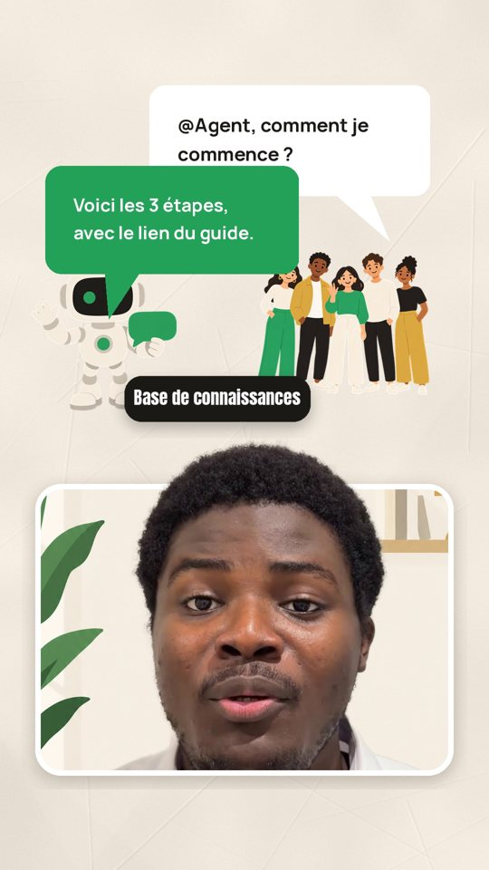
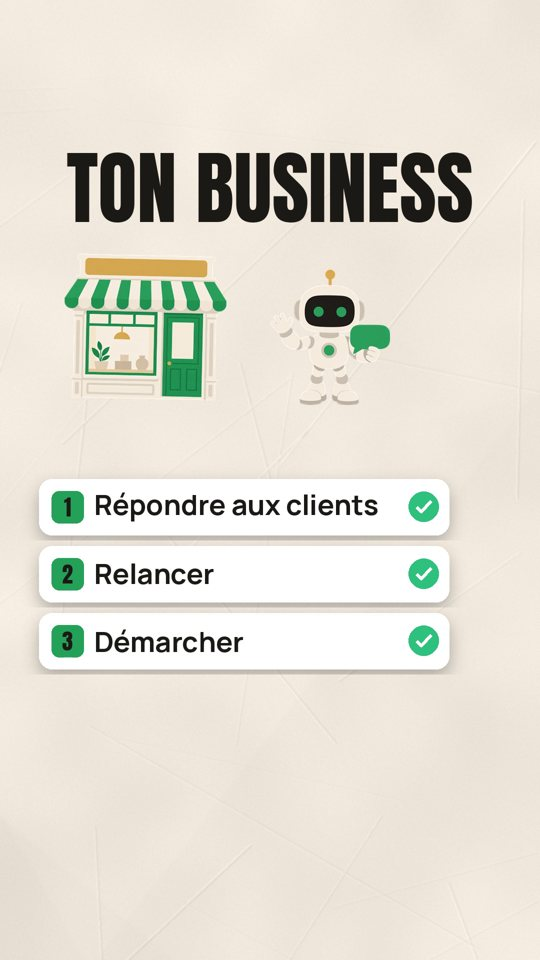

Ce que tu obtiens
La vidéo du haut part d'un vrai rush de 34 secondes, filmé au téléphone. Le skill l'a monté tout seul en alternant trois façons de montrer les choses.


Par défaut, Claude alterne les trois. Tu peux aussi lui demander une seule façon de monter. Il adapte le cadrage à ta prise, nettoie ta voix et glisse les bruitages en dessous, sans couvrir ce que tu dis.
Pour qui
Tu parles face caméra sur TikTok ou Instagram : tu expliques ton métier, tu donnes des conseils, tu présentes ton business. Tu as les idées et les rushs, mais le montage te prend des heures. Ici tu choisis ton style une fois, puis Claude monte chaque nouvelle vidéo dans le même style.
Skill de montage
Tu te filmes, Claude monte : coupes, décor, titres, zooms, sous-titres et illustrations, dans ton style. Le skill tourne dans Claude Code, sur ton ordinateur.
Quatre moments de la même vidéo, montée par le skill.
Dans le pack
- Le skill à installer dans Claude Code en un message : coupes, titres, zooms, sous-titres, détourage, rendu jusqu'à la vidéo finale
- 4 façons de monter : face caméra avec fond remplacé, écran séparé, illustration complète, ou l'alternance des trois
- Ta voix nettoyée et mise au bon niveau, les bruitages bien en dessous
- Un cadrage qui s'adapte à ta prise : tel quel ou plus serré
- Les prompts d'images que Claude écrit pour ChatGPT : ton décor, tes illustrations
- Ton kit de style, pour que chaque vidéo ressemble à la précédente
- Un guide PDF, et la version web pour copier les messages d'un clic
Monte ma vidéo avec le skill montage-face-camera. Le fichier : IMG_3976.MOV. Façon de monter : alternance. Ma vision : propose-moi.
Ce qu'il te faut
Claude Code sur ordinateur
L'onglet Code de l'app Claude pour ordinateur, avec un abonnement Pro. L'app Claude seule ne suffit pas.
ChatGPT
Pour ton décor et tes illustrations. La version gratuite suffit pour essayer.
Ta vidéo
Filmée au téléphone, à la verticale.
Questions
Je dois savoir monter ou coder ?
Non. Tu choisis ta façon de monter et ton style, tu colles les prompts dans ChatGPT et tu valides. Claude fait les coupes, l'animation et le rendu. Il installe aussi ses outils tout seul au premier lancement.
Ça marche sur téléphone ou dans l'app Claude ?
Le montage se fait dans Claude Code, sur ordinateur (Windows, Mac ou Linux) : il faut de la place et de la puissance pour la transcription, le détourage et les fichiers vidéo. Depuis ton téléphone, tu peux seulement préparer tes plans et tes images dans un Projet Claude.
Ça va ressembler à tes vidéos ?
Tu retrouves ma façon de couper, mes titres et les éléments qui montent derrière la tête. Les couleurs, les polices et le style des illustrations, flat ou papier découpé, sont les tiens.
Comment je reçois le pack ?
Après le paiement sur Chariow, tu reçois tout de suite le skill à installer, un PDF avec le guide, et un lien vers la version web où tu copies les messages d'un clic.